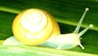
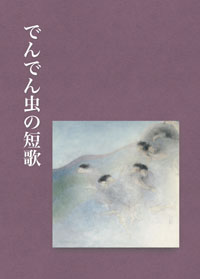
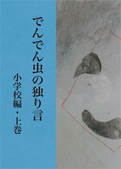
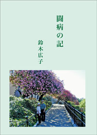
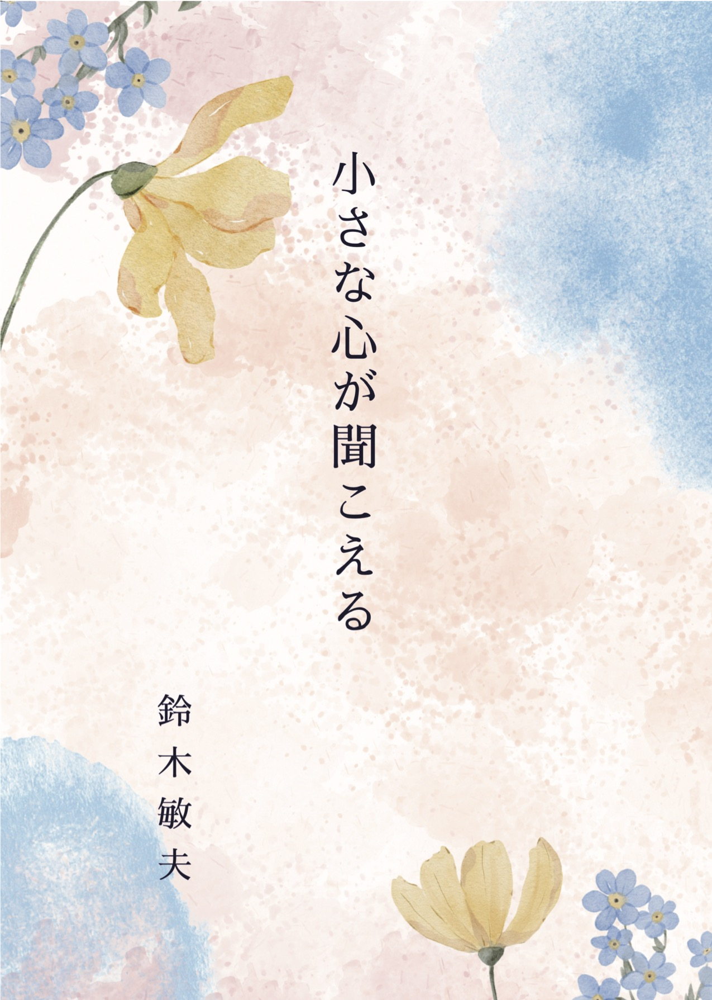

2024.9.13更新

|
2024.9.13更新

庭の紫陽花にでんでん虫が一匹誕生しました。
でんでん虫のホームページの誕生です。
|
|||





小さな心が聞こえる (1989年から1999年にPL誌に掲載された原稿, 当時 51歳) pdf
でんでん虫の短歌 : https://amzn.to/3JAXL0v pdf
自分自身のための処世訓解説 : https://amzn.asia/d/dw6Busn pdf
でんでん虫の独り言 小学校編 : https://amzn.to/3hf5Ewd pdf
でんでん虫の独り言 花笑み編2021 pdf
闘病の記 (鈴木広子) : https://amzn.to/39icXm2 pdf
心と生活の相談 3 : https://amzn.asia/d/4bryUUA pdf
心と生活の相談 4 : https://amzn.asia/d/0AzX83x pdf
心と生活の相談 5 : https://amzn.asia/d/eEcpy3H pdf
2011年5月 サバーファームにて
鈴木敏夫 略歴
1938年(昭和13年) 3月 平壌府八千代町21番地で生まれ、
若松公立国民学校に学ぶ。2年生の時、終戦を迎え、1年間苦労したのち、38度線を
越え、内地 (宮城県本吉郡鹿折村）に引き揚げる。
以後、気仙沼中学、気仙沼高校を卒業し、東京学芸大学に学ぶ。
卒業と同時にＰＬ教団教校一期生として、教師を拝命する。
教校一期生の時、ＰＬ小学校が創立され、教諭として赴任する。
「一年間、やってみよ」とのことであったが、三十年を経て、
1992年 (平成4年) 5月30日、54歳の時、脳溢血で倒れる。これで死んだはずであったが、九死に一生を得て、
1994年4月、小学寮の寮長として復職。
1997年4月、ＰＬ学園小学校の校長を拝命。2004年3月5日、65歳の時、2回目の脳溢血を経験するも、3か月で退院して職場に復帰。
2011年3月、73歳までＰＬ学園小学校の校長を務めた。
2011年4月、ＰＬ学園を離れ、総合事務所に勤務。2021年8月、83歳、妻の手術に伴い、サービス付き高齢者向け住宅「花笑み」に入所